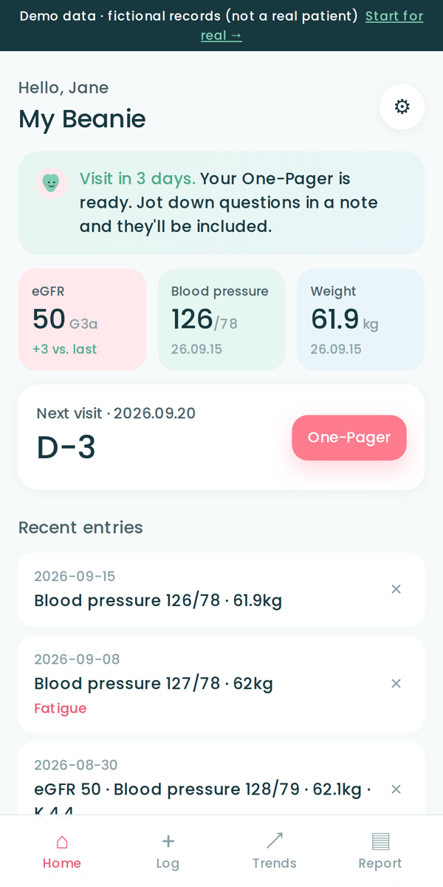

My Beanie has two pillars: the patient's own management and caregiver mirroring. The person cooking and the person logging see the same information, and the scope of sharing is the patient's decision. Designed so that care does not become surveillance.
Works without a server or account. The link the patient sends is the access.
On the app's report screen, they tick the items to share: eGFR and labs, blood pressure, weight, body signals, meal patterns, questions for the doctor and whether to show their name, plus the period (30 or 90 days) and scope (latest only or with trend).
"Send mirror card" builds a link containing only the selected items and hands it to any messenger. Unselected items are not included in the link.
Family opens the link in the phone app or on this page. It is read-only, and can be saved for later. A new link refreshes it.
Left: the app the patient uses every day. Right: the mirror card that patient sent with only eGFR, blood pressure, meal patterns and questions selected. Fictional demo data.

Weight and body signals were not selected by this patient, so they are absent from both the card and the link.
Paste the link you received, or tap it to land here and it opens automatically. A large-screen viewer for use on a computer.
Cards you "keep in this browser" are stored on this computer only. Several family members' cards can be kept side by side.
The person logging is always free. Supporter (1), Family (3) and Family Plus (5) plans, clinic and community passes, and how to subscribe are on the Plans page.
Logging, trends, the One-Pager and mirror-card links. Free, now and later.
An auto-updating supporter view, paused-logging and visit reminders, check-ins. Supporters need not be family.
One invitation code: the patient is free, and one supporter is included.
Once a server and accounts are introduced, the patient turns on "keep sharing" and the family view refreshes automatically. The patient still selects the items, as now, and can switch sharing off at any time. Introduced together with a consent process.